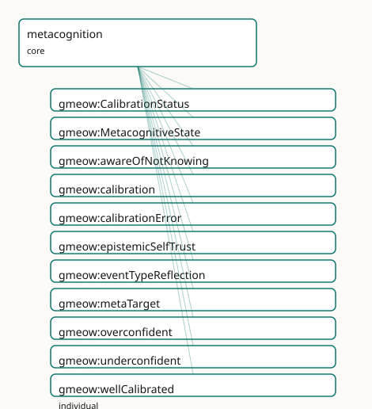

GMEOW Metacognition Module
- IRI: https://blackcatinformatics.ca/gmeow/slices/metacognition
- Tier: core
Group: core
What This Slice Covers
This slice owns 11 terms and contributes 0 mapping or projection rows. Use it when its terms match the native fact you want to preserve; use the linkage tables to see how those facts leave GMEOW for consumer vocabularies.
Dependencies
gmeow:slices/cognitiongmeow:slices/epistemicsgmeow:slices/eventsgmeow:slices/kernelgmeow:slices/observationsgmeow:slices/standpoint
Consumers
- AI-memory calibration and trustworthiness (Principle 15) — flagging 'I might be wrong', surfacing known-unknowns as inquiries (the inquiry-slice
gmeow:evokesbridge), recording the boundary of the agent's knowledge, and defeating one's own inference on reflection; the headline trustworthy-agent demo that separates a calibrated agent from a confabulating one.
Local Map

Examples
Dunning Kruger
- Source:
slices/core/metacognition/examples/dunning-kruger.ttl - GMEOW terms:
gmeow:KnowledgeProficiency,gmeow:MetacognitiveState,gmeow:Person,gmeow:StandpointClaim,gmeow:accordingTo,gmeow:calibration,gmeow:calibrationError,gmeow:claimModality,gmeow:knowledgeMastered,gmeow:knowledgeProficiencyAgent - External prefixes:
wd
# SPDX-FileCopyrightText: 2026 Blackcat Informatics® Inc. <paudley@blackcatinformatics.ca>
# SPDX-License-Identifier: CC-BY-4.0
#
# Worked example — Dunning–Kruger as a MODELLED metacognitive miscalibration, the
# second-order companion to the cognition slice's dunning-kruger.ttl. Where that
# example records two coexisting first-order gmeow:KnowledgeProficiency claims at
# divergent depths (Principle 9), this one turns the reflexive lens on Sam's OWN
# self-assessment: a gmeow:MetacognitiveState whose gmeow:metaTarget is Sam's
# self-attributed mastery, carrying gmeow:calibration gmeow:overconfident. The
# numeric Brier-style gap rides gmeow:calibrationError — a SOLVER-LAYER annotation
# (Principle 12), invisible to the reasoner. The calibration is itself a
# vantage-indexed claim (Principle 9): the assessor judges Sam overconfident; GMEOW
# records the judgement, it does not adjudicate a global verdict.
@prefix gmeow: <https://blackcatinformatics.ca/gmeow/> .
@prefix ex: <https://blackcatinformatics.ca/gmeow/examples/metacognition/> .
@prefix wd: <http://www.wikidata.org/entity/> .
ex:sam a gmeow:Person ; gmeow:name "Sam"@en .
ex:assessor a gmeow:Person ; gmeow:name "External Assessor"@en .
# --- First-order: Sam, by Sam's own lights, has MASTERED quantum computing
# (reusing the cognition slice's gmeow:KnowledgeProficiency by reference).
ex:samQuantumSelf a gmeow:KnowledgeProficiency ;
gmeow:knowledgeProficiencyAgent ex:sam ;
gmeow:knowledgeProficiencySubject wd:Q192995 ; # quantum computing
gmeow:knowledgeProficiencyLevel gmeow:knowledgeMastered ;
gmeow:knowledgeProficiencyScale gmeow:scaleKnowledgeDepth ;
gmeow:accordingTo ex:sam . # self-attributed vantage
# --- Second-order: Sam's metacognitive state reflecting on that self-assessment.
# metaTarget is the reflexivity edge onto Sam's own first-order proficiency
# (the same-agent ownership is a SHACL concern, not an OWL axiom); calibration
# reads the direction of the confidence/accuracy gap.
ex:samSelfRegard a gmeow:MetacognitiveState ;
gmeow:metaTarget ex:samQuantumSelf ;
gmeow:calibration gmeow:overconfident .
# --- The calibration is a vantage-indexed claim (Principle 9): the assessor,
# observing Sam's self-regard against a knows-about assessment, judges it
# overconfident and records the Brier-style magnitude as a solver-layer
# annotation on the claim (computed-not-asserted, Principle 12).
ex:samCalibrationClaim a gmeow:StandpointClaim ;
gmeow:vantage ex:assessor ;
gmeow:observedFeature ex:samSelfRegard ;
gmeow:observationMethod gmeow:methodExpertJudgement ;
gmeow:claimModality gmeow:probable ;
gmeow:calibrationError 0.62 .
Known Unknown
- Source:
slices/core/metacognition/examples/known-unknown.ttl - GMEOW terms:
gmeow:Agent,gmeow:Entity,gmeow:Question,gmeow:awareOfNotKnowing,gmeow:evokes,gmeow:motivates,gmeow:questionType,gmeow:seeksToKnow,gmeow:typeHow
# SPDX-FileCopyrightText: 2026 Blackcat Informatics® Inc. <paudley@blackcatinformatics.ca>
# SPDX-License-Identifier: CC-BY-4.0
#
# Worked example — a KNOWN-UNKNOWN that mints an inquiry, with NO new bridge term.
# Lillith recognises the boundary of her own knowledge (gmeow:awareOfNotKnowing),
# the second-order complement of the cognition knowledge spectrum. The recognised
# gap motivates a question by REUSING inquiry's open-domain gmeow:evokes (the
# not-known subject evokes the question) and the inquiry spine (gmeow:seeksToKnow)
# — there is no gmeow:motivates term (Principle 6), and the bridge to the inquiry
# slice is documented routing, not an entailment. This is the trustworthy-agent
# move: surfacing what it does not know as an open inquiry rather than confabulating.
@prefix gmeow: <https://blackcatinformatics.ca/gmeow/> .
@prefix ex: <https://blackcatinformatics.ca/gmeow/examples/metacognition/> .
@prefix rdfs: <http://www.w3.org/2000/01/rdf-schema#> .
ex:lillith a gmeow:Agent .
ex:protocolX a gmeow:Entity ; rdfs:label "protocol X"@en .
# --- Known-unknown: Lillith is aware that she does NOT know protocol X — a
# recognised gap (second-order), not the open-world silence of an unasserted
# triple. The boundary of her knowledge, recorded for a trustworthy memory.
ex:lillith gmeow:awareOfNotKnowing ex:protocolX .
# --- The gap evokes a question (reusing inquiry's open-domain gmeow:evokes — the
# not-known subject sits legally in its subject position, so no new motivates
# term is minted), which Lillith then holds open and seeks to know.
ex:protocolX gmeow:evokes ex:howDoesProtocolXWork .
ex:howDoesProtocolXWork a gmeow:Question ;
gmeow:questionType gmeow:typeHow ;
rdfs:label "how does protocol X work?"@en .
ex:lillith gmeow:seeksToKnow ex:howDoesProtocolXWork . # the inquiry spine, reused
Reflection Revision
- Source:
slices/core/metacognition/examples/reflection-revision.ttl - GMEOW terms:
gmeow:Agent,gmeow:Event,gmeow:InferenceCommitment,gmeow:InferenceTenure,gmeow:MetacognitiveState,gmeow:StandpointClaim,gmeow:TimeInterval,gmeow:claimModality,gmeow:conclusion,gmeow:defeaterKind - External prefixes:
xsd
# SPDX-FileCopyrightText: 2026 Blackcat Informatics® Inc. <paudley@blackcatinformatics.ca>
# SPDX-License-Identifier: CC-BY-4.0
#
# Worked example — REFLECTION defeating one's own inference, belief revision as
# SUPPRESSION (Principle 10). The metacognition layer over the inference slice's
# belief-revision pattern: Lillith inductively concluded "the server is down" from
# "the ping timed out". On REFLECTION (a gmeow:Event typed gmeow:eventTypeReflection,
# tied to the reflexive layer by a gmeow:MetacognitiveState whose gmeow:metaTarget
# is her OWN gmeow:InferenceCommitment) she surfaces an UNDERCUTTING defeater — a
# firewall rule blocked the ping, removing the warrant. Revision does NOT delete:
# the conclusion-claim is set gmeow:displayable false, the gmeow:InferenceTenure is
# closed, and the gmeow:InferenceCommitment is retained as audit. The defeater is
# installed via the inference slice's gmeow:hasDefeater (reused by reference); the
# reflection → revision link is a documented bridge, never an axiom.
@prefix gmeow: <https://blackcatinformatics.ca/gmeow/> .
@prefix ex: <https://blackcatinformatics.ca/gmeow/examples/metacognition/> .
@prefix rdfs: <http://www.w3.org/2000/01/rdf-schema#> .
@prefix xsd: <http://www.w3.org/2001/XMLSchema#> .
ex:lillith a gmeow:Agent ; gmeow:name "Lillith"@en .
ex:propPingTimedOut rdfs:label "the ping timed out"@en .
ex:propServerDown rdfs:label "the server is down"@en .
ex:propFirewall rdfs:label "a firewall rule blocks ping"@en .
# --- The original premise and conclusion (the prior inference Lillith held).
ex:premPingTimedOut a gmeow:StandpointClaim ;
gmeow:vantage ex:lillith ;
gmeow:observedFeature ex:propPingTimedOut ;
gmeow:observationMethod gmeow:methodDirectObservation ;
gmeow:claimModality gmeow:unequivocal .
# The conclusion — now SUPPRESSED on reflection, but retained.
ex:conclServerDown a gmeow:StandpointClaim ;
rdfs:label "Concluded (then retracted): the server is down"@en ;
gmeow:vantage ex:lillith ;
gmeow:observedFeature ex:propServerDown ;
gmeow:observationMethod gmeow:methodExpertJudgement ;
gmeow:claimModality gmeow:probable ;
gmeow:inferenceMode gmeow:modeInduction ;
gmeow:inferredFrom ex:premPingTimedOut ;
gmeow:displayable false . # Principle 10: suppressed by the fired defeater
# --- The reflection act: Lillith reviews her OWN reasoning (the metacognition
# layer). The event carries the gmeow:eventTypeReflection value; a
# gmeow:MetacognitiveState ties the review to the reflexive layer, its
# gmeow:metaTarget pointing at her own inference commitment.
ex:lillithReview a gmeow:Event ;
gmeow:eventType gmeow:eventTypeReflection .
ex:lillithReflectsOnInf1 a gmeow:MetacognitiveState ;
gmeow:metaTarget ex:revisedCommitment .
# --- The defeater the reflection surfaces (undercutting: removes the warrant,
# does not assert the negation).
ex:defeaterFirewall a gmeow:StandpointClaim ;
rdfs:label "Defeater: a firewall rule blocked the ping"@en ;
gmeow:vantage ex:lillith ;
gmeow:observedFeature ex:propFirewall ;
gmeow:observationMethod gmeow:methodDirectObservation ;
gmeow:claimModality gmeow:unequivocal ;
gmeow:defeaterKind gmeow:defeaterUndercutting .
# --- The reified argument, retained as audit; the reflection installs the
# defeater on Lillith's own commitment via the inference slice's hasDefeater.
ex:revisedCommitment a gmeow:InferenceCommitment ;
rdfs:label "Inductive argument: ping-timeout therefore server-down (defeated on reflection)"@en ;
gmeow:inferenceModeOf gmeow:modeInduction ;
gmeow:premise ex:premPingTimedOut ;
gmeow:conclusion ex:conclServerDown ;
gmeow:hasDefeater ex:defeaterFirewall .
# --- The tenure — opened then closed (never deleted, Principle 10).
ex:serverDownTenure a gmeow:InferenceTenure ;
rdfs:label "The held interval of the 'server is down' conclusion"@en ;
gmeow:tenureOf ex:revisedCommitment ;
gmeow:duringInterval ex:tenureInterval .
ex:tenureInterval a gmeow:TimeInterval ;
gmeow:startedAtTime "2026-06-16T09:00:00Z"^^xsd:dateTime ;
gmeow:endedAtTime "2026-06-16T09:12:00Z"^^xsd:dateTime . # closed when the defeater fired
Terms
Classes
| Term | Label | Definition |
|---|---|---|
gmeow:CalibrationStatus |
Calibration Status | The qualitative fit between an agent's avowed confidence and its actual accuracy — a closed value vocabulary: gmeow:wellCalibrated (confidence tracks accuracy)... |
gmeow:MetacognitiveState |
Metacognitive State | An agent's intrinsic SECOND-ORDER mental moment — a state whose subject is one of the agent's OWN first-order mental moments or claims (a belief about a belief... |
Properties
| Term | Label | Definition |
|---|---|---|
gmeow:awareOfNotKnowing |
aware of not knowing | A known-unknown: an agent is aware that it does NOT know a subject — the second-order recognition of a gap in its own knowledge, the explicit boundary of what... |
gmeow:calibration |
calibration | Assigns a qualitative gmeow:CalibrationStatus (wellCalibrated / overconfident / underconfident) to a gmeow:MetacognitiveState — the direction of the gap betwee... |
gmeow:calibrationError |
calibration error | A SOLVER-LAYER numeric measure of miscalibration (Principle 12) — a Brier-style score in the closed interval [0,1] attached to the statement asserting a metaco... |
gmeow:epistemicSelfTrust |
epistemic self-trust | The reliability an agent accords to one of its OWN epistemic faculties or sources — feeling-of-knowing: how far the agent trusts its own memory, perception, or... |
gmeow:metaTarget |
meta target | The reflexivity edge: relates a gmeow:MetacognitiveState to the first-order mental moment or claim it reflects upon. The RANGE is left intentionally open — the... |
Individuals
| Term | Label | Definition |
|---|---|---|
gmeow:eventTypeReflection |
reflection | An event of an agent reviewing its OWN reasoning — re-examining a prior inference, belief, or self-assessment. A value individual of gmeow:EventType (the event... |
gmeow:overconfident |
overconfident | Confidence exceeds accuracy: the agent is more sure than it should be — the Dunning–Kruger pole, characteristically overconfidence at low competence. The confa... |
gmeow:underconfident |
underconfident | Accuracy exceeds confidence: the agent is less sure than it should be — the impostor pole, where knowledge is held but distrusted. The opposite failure to over... |
gmeow:wellCalibrated |
well calibrated | Confidence tracks accuracy: the agent's avowed confidence matches how often it is right — the target calibration of a trustworthy agent. The midpoint of the ov... |
Guide
Metacognition
Slice:
https://blackcatinformatics.ca/gmeow/slices/metacognition· tier: core
Second-order epistemics — the reflexive turn. The whole epistemic stack is first-order: an agent
believes a proposition (epistemics), knows about a subject (cognition), claims a feature
from a vantage (standpoint). Metacognition is the turn whose subject is one of the agent's own
first-order states or claims, plus calibration — the fit between avowed confidence and
accuracy. For a trustworthy AI memory this is decisive: "how sure am I that I'm right, and do I know
where my knowledge stops" is exactly what separates a calibrated agent from a confabulating one
(Principle 15). The slice mints almost no new machinery — a metacognitive judgement is a
gmeow:StandpointClaim whose gmeow:observedFeature is one of the agent's own claims / mental
moments and whose gmeow:vantage is that same agent.
Reflexivity by reuse, not new machinery
gmeow:MetacognitiveState (gufo:Kind ⊑ gmeow:MentalMoment) is the endurant second-order mode, and
gmeow:metaTarget is the reflexivity edge to the first-order state it reflects upon. It is the
co-equal sibling of the first-order mental modes, gathered under gmeow:MentalMoment (kernel) so
an agent's whole mental life is one queryable family:
| Mode | Slice | Stands toward |
|---|---|---|
gmeow:CognitiveState |
cognition |
a subject the agent knows (objectual, first-order) |
gmeow:IntentionalMode |
teleology |
a state of affairs the agent aims at (conative, first-order) |
| doxastic states | epistemics |
a proposition the agent holds (first-order) |
gmeow:MetacognitiveState |
metacognition |
one of the agent's own first-order states / claims (reflexive, second-order) |
These are documented siblings, not subsumed: there is deliberately no rdfs:subClassOf
making gmeow:MetacognitiveState a kind of gmeow:CognitiveState. "Thinking about thinking is a kind
of thinking" would erase the reflexive-vs-first-order distinction — exactly as gmeow:Question is not
a gmeow:Proposition. The siblinghood lives in prose and the tests/test_metacognition.py
no-subsumption guard, never in an axiom.
gmeow:MetacognitiveState · gmeow:metaTarget
gmeow:MetacognitiveState types an agent's second-order mental moment, inhering in exactly one agent.
gmeow:metaTarget (domain gmeow:MetacognitiveState, open range, non-functional) points at the
first-order gmeow:MentalMoment, gmeow:StandpointClaim, or gmeow:InferenceCommitment it reflects
upon. The reflexivity is conceptual (the target is the agent's own state), never OWL
reflexivity: gmeow:metaTarget is deliberately not owl:ReflexiveProperty (which leaves EL and
is semantically false — the metastate and its target are distinct individuals). Same-agent ownership
is a SHACL concern, not a reasoned axiom (Principle 12).
Calibration
gmeow:calibration (domain gmeow:MetacognitiveState, range gmeow:CalibrationStatus) assigns the
qualitative direction of the confidence/accuracy gap. gmeow:CalibrationStatus is a closed value
vocabulary (gufo:AbstractIndividualType ⊑ gufo:QualityValue), its members individuals, never
subclasses:
| Value | Reading |
|---|---|
gmeow:wellCalibrated |
confidence tracks accuracy — the target of a trustworthy agent |
gmeow:overconfident |
confidence exceeds accuracy — the Dunning–Kruger pole, the confabulation risk |
gmeow:underconfident |
accuracy exceeds confidence — the impostor pole |
The numeric magnitude of the gap is gmeow:calibrationError — a Brier-style score in [0,1],
solver-layer (Principle 12). It is an owl:AnnotationProperty by design, exactly like
gmeow:confidence: invisible to the reasoner, computed externally, and never a materialised
axiom. Modelling it as an owl:DatatypeProperty with a domain would make it a reasoned ABox edge and
risk the reasoner touching it — the guard test_calibration_error_is_a_solver_layer_annotation pins
it as annotation-only.
Dunning–Kruger is overconfidence at low competence — the cognition slice's coexisting-claims
fixture, now modelled. The dunning-kruger.ttl example turns the
reflexive lens on Sam's own self-assessment: a gmeow:MetacognitiveState whose gmeow:metaTarget is
Sam's self-attributed gmeow:KnowledgeProficiency, carrying gmeow:calibration gmeow:overconfident,
with the assessor's gmeow:calibrationError riding the calibration claim. The calibration is itself a
vantage-indexed claim (Principle 9); GMEOW records the judgement, it does not adjudicate a verdict.
gmeow:CalibrationStatus · gmeow:calibration · gmeow:calibrationError
The closed status vocabulary, the property that assigns it (non-functional — a self-assessment and an
external assessment coexist), and the solver-layer Brier-style magnitude annotation. The qualitative
direction and the numeric gap are kept distinct: gmeow:calibration reasons (an EL range axiom over a
closed vocab); gmeow:calibrationError does not (an annotation the reasoner never sees).
Known-unknowns
gmeow:awareOfNotKnowing (domain gmeow:Agent, open range, non-functional) records the
boundary of an agent's knowledge — a recognised gap (second-order), not the open-world silence
of an unasserted triple. It is the reflexive complement of the cognition knowledge spectrum: where
gmeow:isAwareOf … gmeow:hasMastered record what an agent knows, this records a recognised edge of
that knowledge.
A known-unknown motivates a question by reference — with no new bridge term. The recognised
gap mints a gmeow:Question by reusing inquiry's open-domain gmeow:evokes (the not-known subject
sits legally in evokes's subject position) and the inquiry spine (gmeow:seeksToKnow); there is no
gmeow:motivates partner (Principle 6), and the bridge is documented routing, not an entailment. The
known-unknown.ttl example shows the trustworthy-agent move: surfacing
what it does not know as an open inquiry rather than confabulating an answer.
gmeow:awareOfNotKnowing
The known-unknown edge. Flat (no rdfs:subPropertyOf), open range, domain gmeow:Agent — the cheap
surface a trustworthy memory reads to surface its blind spots. The inquiry bridge reuses
gmeow:evokes; this slice asserts no owl:subPropertyOf into the inquiry slice.
Epistemic self-trust
gmeow:epistemicSelfTrust (domain gmeow:Agent, open range, non-functional) is feeling-of-knowing
— the reliability an agent accords to one of its own epistemic faculties or sources (its memory,
perception, reasoning). It is the flat 80% surface; its rich, graded form is a
gmeow:StandpointClaim whose gmeow:vantage is the agent and whose gmeow:observedFeature is the
agent's own faculty, carrying gmeow:trustLevel by reference to the trust slice — self-trust is
trust-about-oneself, the gmeow:trustor and gmeow:trustee coinciding. The trust machinery is
reused, not re-minted (Principle 6); this slice asserts no triples into the trust slice.
gmeow:epistemicSelfTrust
The self-trust edge. Use it for reliance on one's own faculty; trust in an external agent or source
is the trust slice's gmeow:TrustAssertion directly. Promote to the standpoint-claim idiom carrying
gmeow:trustLevel when the degree, scale, or vantage of self-trust is itself the fact.
Reflection & belief revision
gmeow:eventTypeReflection (a gmeow:EventType, the gmeow:eventTypeDeception pattern) types an
event of an agent reviewing its own reasoning. A reflection may install a gmeow:hasDefeater on
one of the agent's own gmeow:InferenceCommitment individuals (the inference slice), triggering
belief revision as suppression (Principle 10): the defeated conclusion-claim is set
gmeow:displayable false and the prior inference is retained as audit, never deleted. The
reflection-revision.ttl example walks it: Lillith reflects on
her own abductive inference, surfaces an undercutting defeater (a firewall blocked the ping), installs
it via gmeow:hasDefeater, and suppresses the defeated conclusion — the reflection → revision link is
a documented bridge, never an axiom.
The boundary with the mentation slice is documented (Principle 4): gmeow:eventTypeReflection types
the reviewable occurrent kind; a reflection that unfolds as a reasoning process is a
gmeow:MentalProcess — one canonical source per fact, never both for the same individual.
gmeow:eventTypeReflection
The reflection-act value individual. Type a reflection gmeow:Event with it; record revision by
installing gmeow:hasDefeater on the agent's own inference and suppressing the defeated conclusion
with gmeow:displayable false.
Alignments (mappings/equivalences.ttl)
The slice's alignments are deliberately prose-only: its grounding literatures —
Nelson & Narens' metamemory model, Flavell's metacognition, and the Brier-score
calibration tradition — have no stable external IRI vocabulary to map to, so the mapping set carries
the scholarly grounding in its comment and seeds no gmeow:TermEquivalence rows (the same
intentional non-mapping the inquiry slice applies to its question-type vocabulary). The reused
first-order quantities and the cross-slice bridges carry their alignments in their home slices.
Dependencies
| Slice | Why |
|---|---|
kernel |
gmeow:MentalMoment (the mode genus) and gmeow:Agent (the known-unknown / self-trust domain) |
epistemics |
the first-order doxastic states and credence that metacognition assesses — referenced, the reflexive gmeow:metaTarget points at them |
standpoint |
gmeow:StandpointClaim — a metacognitive judgement is a standpoint claim over the agent's own state (gmeow:vantage = the agent) |
observations |
the Observation spine the metacognitive claim rides (gmeow:vantage, gmeow:observedFeature) |
cognition |
gmeow:CognitiveState (the first-order sibling) and gmeow:KnowledgeProficiency (the Dunning–Kruger gmeow:metaTarget) |
Bridges to inquiry (gmeow:evokes), inference (gmeow:hasDefeater, gmeow:InferenceCommitment),
and trust (gmeow:trustLevel) are reused by reference and documented, not declared as
dependencies — the slice asserts no axioms into them (Principle 9).
Verified by construction
tests/test_metacognition.py pins the load-bearing shape of the slice:
- Reflexive mode, one gUFO metaclass —
gmeow:MetacognitiveStateis a[gufo:Kind](../external/terms.md#gufo-kind) ⊑ [gmeow:MentalMoment](../reference/classes/gmeow-MentalMoment.md)carrying exactly one gUFO metaclass. - Sibling no-subsumption guard — no
rdfs:subClassOftogmeow:CognitiveState/gmeow:IntentionalMode/gmeow:StandpointClaim. gmeow:metaTargetopen & characteristic-free — domaingmeow:MetacognitiveState, nordfs:range, nordfs:subPropertyOf, and none of Reflexive / Irreflexive / Transitive / Symmetric / Functional.- Calibration value vocab —
gmeow:CalibrationStatusis[gufo:AbstractIndividualType](../external/terms.md#gufo-abstractindividualtype) ⊑ [gufo:QualityValue](../external/terms.md#gufo-qualityvalue); the three statuses are individuals, never subclasses;[gmeow:calibration](../reference/properties/gmeow-calibration.md)ranges over the closed vocab. - Solver-layer guard —
gmeow:calibrationErroris anowl:AnnotationProperty, not anowl:DatatypeProperty/owl:ObjectProperty, with no domain / range. - Flat, open-range
Agentedges —gmeow:awareOfNotKnowingandgmeow:epistemicSelfTrustare object properties with domaingmeow:Agent, nordfs:range, nordfs:subPropertyOf. - Reflection
EventType—gmeow:eventTypeReflectionis an individual ofgmeow:EventType. - No truth / status bit — none of
isCalibrated/isReflected/isTrueappears in any triple position; no locally-declared property carries anxsd:booleanrange. - Bridges documented, not axiomatised (Principle 9) — no
rdfs:subPropertyOffromgmeow:awareOfNotKnowingintogmeow:evokesor fromgmeow:epistemicSelfTrustinto the trust properties. Annotationcompleteness (Principle 8) — all 11 locally-declared terms carry anrdfs:label, askos:definition, andrdfs:isDefinedBythe metacognition slice IRI.